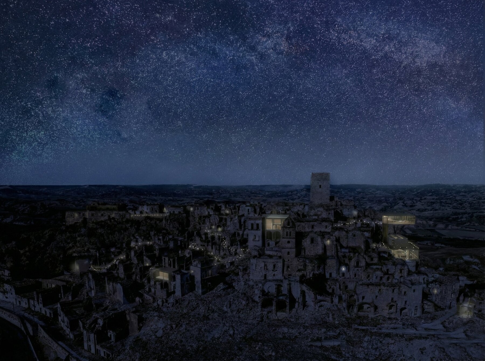
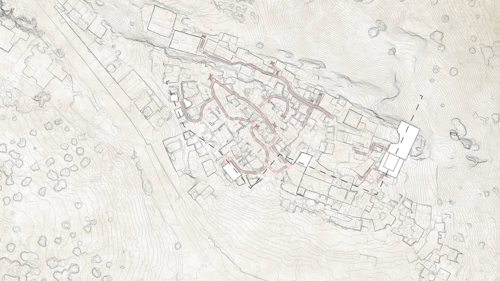
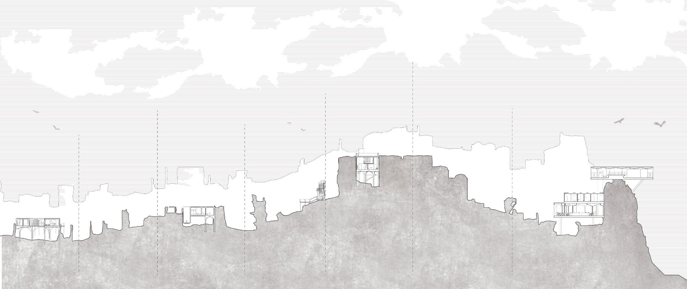
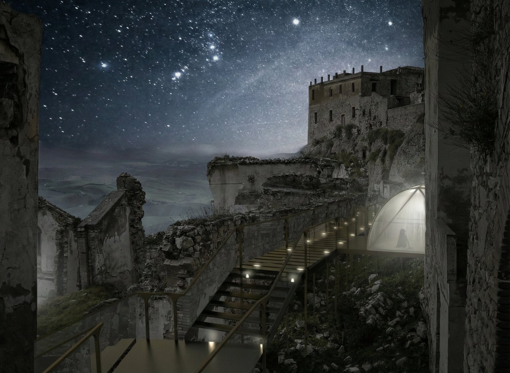
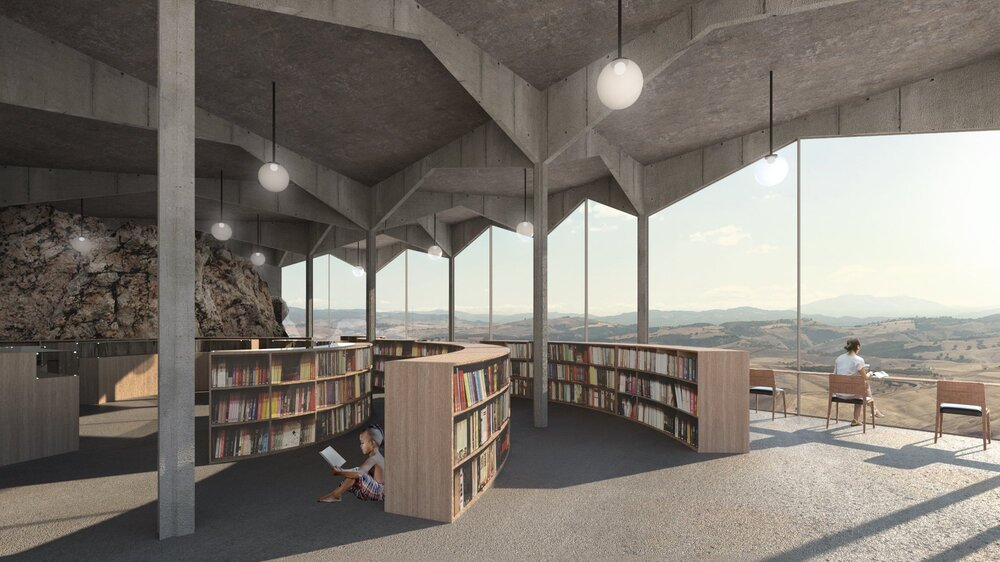
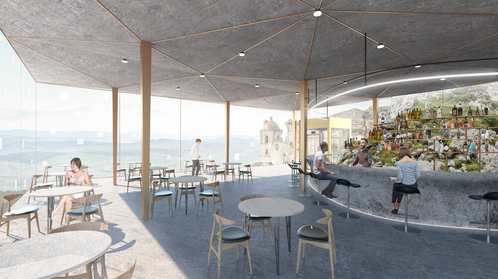
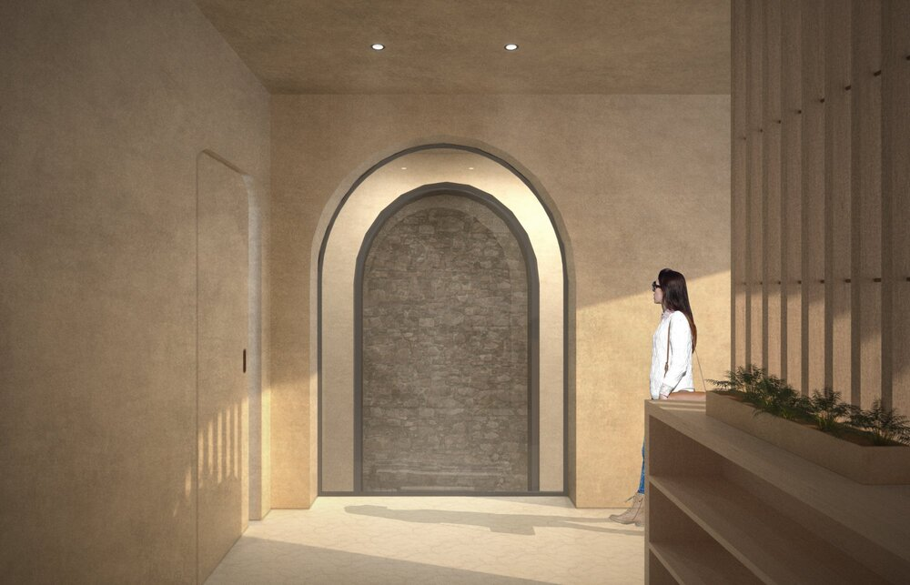
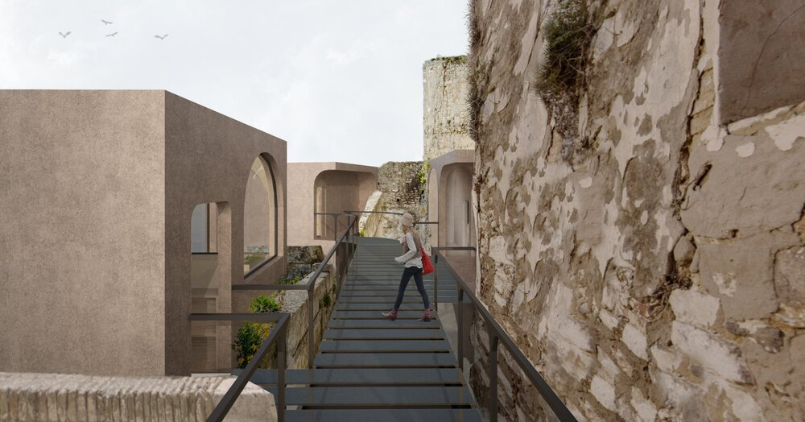
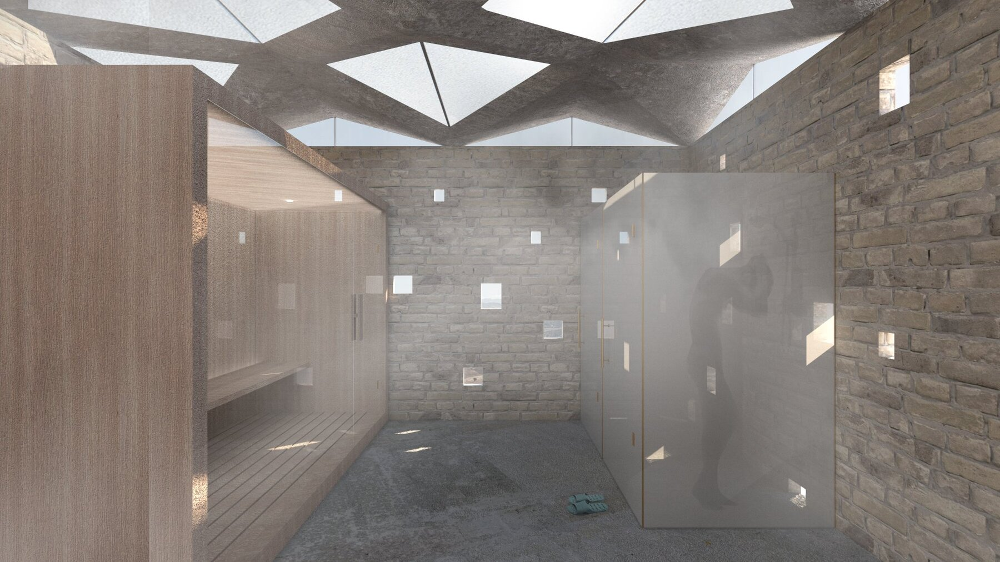

Intertwine
A unique experience bridging the past to the present through the mysterious ruins of Craco.
Program
Visitor Center
Location
Craco, Italy
Year
2019
Team
With Hao Zhong, Peicong Zhang, Muyu Wu
Award
Young Architects Competition Finalist 2020
Craco is a medieval hilltop town in southern Italy, abandoned since a landslide in 1963. Walking through its ruins—touching weathered stone, sensing ancient echoes—the project aims to create a unique experience that bridges past and present.

The design intertwines new construction with existing ruins, creating a visitor center and artist residency that occupies the unexplored northwest territory of the town. A network of elevated walkways connects to the existing travel route, offering alternative perspectives through the abandoned landscape.


The visitor center is composed of three volumes anchored to the mountain—a library, wellness center, and restaurant. Each building draws energy from Craco's local architecture, using new materials and techniques to interpret traditional forms in a contemporary way.

At night, soft lights trace pathways through the ghost town while overhead the Milky Way wheels through unpolluted darkness. The walkways are designed to minimize impact on the ruins while creating safe passage for visitors exploring after sunset.


The new buildings feature concrete structures with geometric skylights that filter southern Italian light into the interiors. Materials are kept simple—exposed concrete, stone, wood—to complement rather than compete with the textured ruins surrounding them.


Different types of suites are strategically nestled within existing relics throughout the site, offering an unprecedented experience of coexistence between past and present. Guests sleep within ancient stone walls while enjoying contemporary comfort—an architecture that speaks two languages simultaneously.
